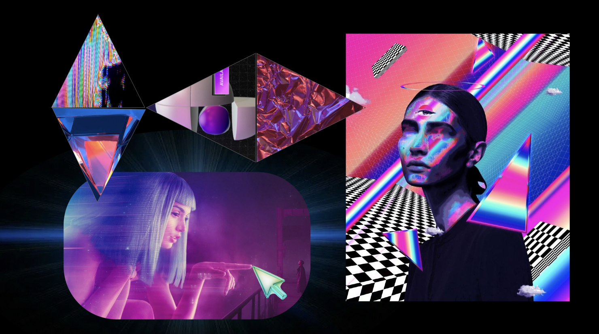
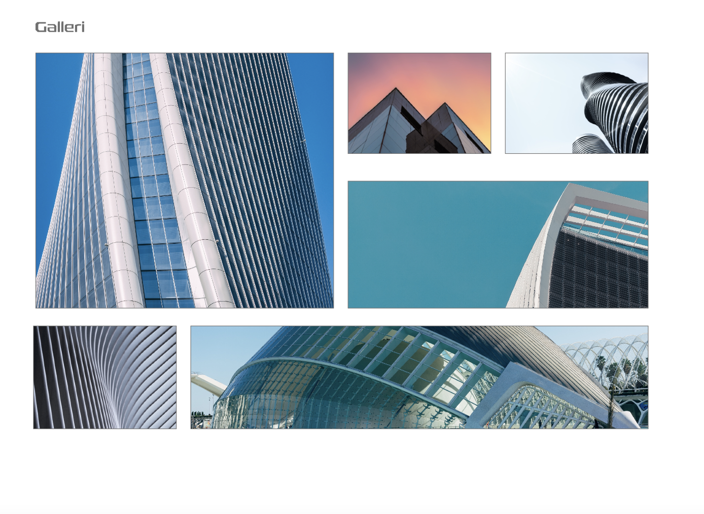
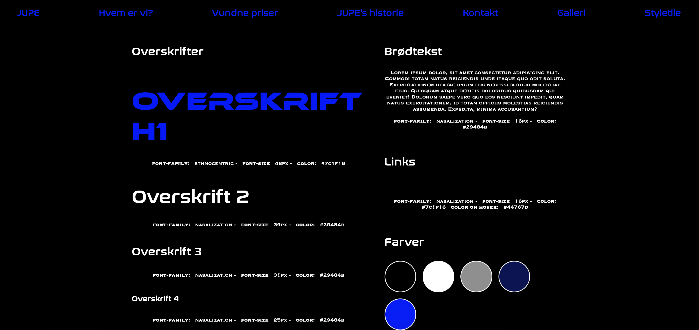

Tema 2 - Grundlæggende web
I dette tema skulle vi gennem gruppearbejde researche og fremlægge om
en given stilart.
Jeg arbejdede med “Modern Futuristic Web Design - 3D and fluorescent
colors".
Det at få lov, til at arbejde med en enkelt stilart bød på en masse
research som derudover også betød, at jeg virkelig kunne få lov at gå
i dybden og gennemarbejde min givne stil.
Vi lærte helt grundlæggende at sætte hjemmesider op i HTML og CSS og
om designprincipper bl.a. gestaltlove, typografier, farvelære og
billedbehandling i Photoshop.
På baggrund af al den teori vi gennemgik og arbejdede med i
undervisningen skulle vi lave temaopgaven. Min løsning blev en
arkitekthjemmeside kodet efter given wireframe men som skulle have det
visuelle indtryk af den tildelte stil fra starten af forløbet.
På baggrund af min tilegnede viden fra undervisningen fik jeg kodet en
hjemmeside og vha. designundervisning og grundig research var jeg i
stand til at træffe designbeslutninger, der gjorde det muligt, at
overholde rammerne for tildelte stil.


